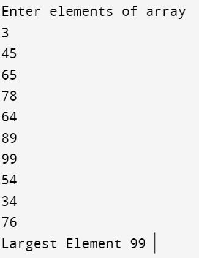

#include<stdio.h>
//find the largest element in the integer array using recursion
int max(int arr[], int n)
{
if (n == 1)
return arr[0]; // base case: when there is only one number, it's the maximum
else {
int res = max(arr, n - 1);
return (res > arr[n-1]) ? res : arr[n-1];
}
}
void main()
{
int arr[10];
printf("Enter elements of array\n");
for (int i=0;i<10;i++)
scanf("%d",&arr[i]);
int mx = max(arr, 10);
printf("\nLargest Element %d ",mx);
}
Output:
